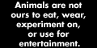
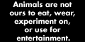

i found pretty cool and interesting blog posts here (!) Again, I love academic blogs because they usally skip the throat clearing and academese lingua franca.
"Our hope is to provide a useful platform where activist/academic/practitioner voices can meet and build solidarities across geographical scales. . . anticolonial, antiracist, queer, and feminist" topics.
basically a forum for a bunch of contrarian nerds freaking out about AI ... BUT (!!) you often find some awesome user submitted articles on philosophy, tech, psychology, econ. etc that kinda think outside the box.
a guy who is basically 'the father' of the above website who talks about psychology and philosophy (i no longer read it because his politics are extra horribe!)
a wiki for 'sceptics', i think it was build during the early era of new atheism but its still updated and has some cool entries, for e.g Just asking questions.
i only include it here because i happened to run across this page by accident when i was little and was my first intro into academic thought, basically a physics phd gives his takes on philosophy. also the website is super old so it has that aesthetic i like :D
you probably know this one, lrb is one of the most famous literary magazines for book reviews and essays and i just love to read it so why the heck not include it
a blog about linguistics with a focus on internet linguistics like trends in internet language use and communication. so if u love the internet and its culture like me, this is for u!
this one is wildddd (BEWARE OF THE ANARCHY HYPERLINK!!). from Wikipedia: "...website dedicated to preserving the digital documents that contain the history of the bulletin board system (BBS) world and various subcultures...'a glimpse into the history of writers and artists bound by the 128 characters that the American Standard Code for Information Interchange (ASCII) allowed them'...thousands of text files, primarily from the 1980s, but also contains some older files and some that were created well into the 1990s.
i just love to spend hourse here, looking into the lives of those that were here when the internet first began. this site has blogs that were last updated in the 90s and 2000s
ill just let them explain this one: "Between 2009 and 2012, iPhones had a built-in "Send to YouTube" button in the Photos app. Many of these uploads kept their default IMG_XXXX filenames, creating a time capsule of raw, unedited moments from random lives."
 Home
Home About
About Entries
Entries Chat
Chat Kool Webpages
Kool Webpages Guestbook
Guestbook Kool Books
Kool Books Truth Table
Truth Table Contact
Contact

 
